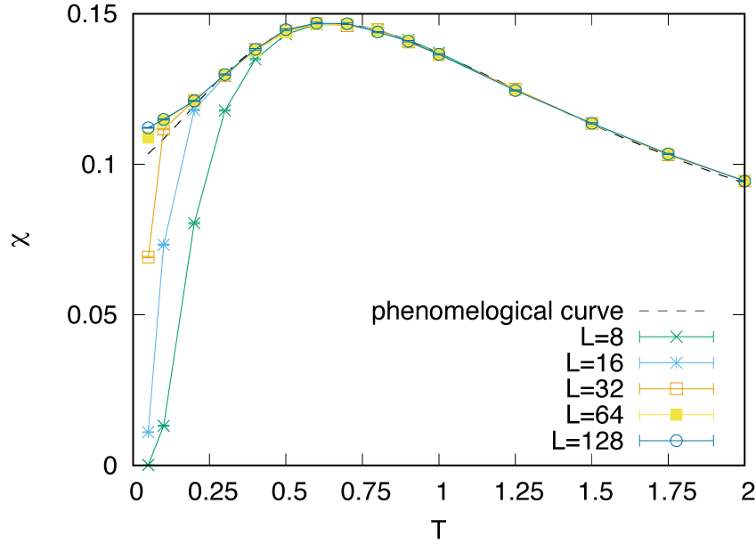

3.3. Example for moller calculation with DSQSS¶
What’s this sample?¶
This is an example of moller with
DSQSS, which is an
open-source software package for performing the path-integral Monte
Calro method for quantum many-body problem. In this example, we will
calculate the temperature dependence of the magnetic susceptibilities
\(\chi\) of the \(S=1/2\) (\(M=1\) in the terms of DSQSS)
and \(S=1\) (\(M=2\)) antiferromagnetic Heisenberg chain under
the periodic boundary condition with several length. By using
moller, calculations with different parameters (\(M, L, T\)) are
performed in parallel.
This example is corresponding to one of the official tutorials.
Preparation¶
Make sure that moller (HTP-tools) package and DSQSS are
installed. In this tutorial, the calculation will be performed using the
supercomputer system ohtaka at ISSP.
How to run¶
Prepare dataset
Run the script
make_inputs.shenclosed within this package.$ bash ./make_inputs.sh
This make an
outputdirectory (if already exists, first removed then make again). Underoutput, working directories for each parameter likeL_8__M_1__T_1.0will be generated. A list of the directories is written to a filelist.dat.Generate job script using
mollerGenerate a job script from the job description file using
moller, and store the script as a file namedjob.sh.$ moller -o job.sh input.yaml
Then, copy
job.shin theoutputdirectory, and change directory tooutput.Run batch job
Submit a batch job with the job list as an argument.
$ sbatch job.sh list.dat
Check status
The status of task execution will be summarized by
moller_statusprogram.$ moller_status input.yaml list.dat
Gather results
After calculation finishes, gather result by
$ python3 ../extract_result.py list.dat
This script writes results into a text file
result.datwhich has 5 columns, \(M\), \(L\), \(T\), mean of \(\chi\), and stderr of \(\chi\).To visualize the results, GNUPLOT files
plot_M1.pltandplot_M2.pltare available.$ gnuplot --persist plot_M1.plt $ gnuplot --persist plot_M2.plt

The main different between \(S=1/2\) and \(S=1\) AFH chains is whether the excitation gap vanishes (\(S=1/2\)) or remains (\(S=1\)). Reflecting this, the magnetic susceptibility in the very low temperature region remains finite (\(S=1/2\)) or vanishes (\(S=1\)). Note that for the \(S=1/2\) case, the finite size effect opens the spin gap and therefore the magnetic susceptibility of small chains drops.